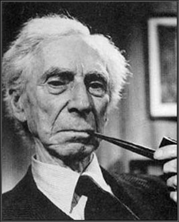

Full name: Microsoft.FSharp.Collections.list<_>
Full name: Microsoft.FSharp.Core.bool
val string : value:'T -> string
Full name: Microsoft.FSharp.Core.Operators.string
--------------------
type string = System.String
Full name: Microsoft.FSharp.Core.string
Full name: Microsoft.FSharp.Core.option<_>
Incremental, Runtime and Extensible: Type Checker
for a Funny Language
Tomas Petricek
University of Kent and fsharpWorks
tomas@tomasp.net | @tomaspetricek
The Gamma
Simple language for data exploration

Data journalism
Making facts great again!
Building more open, transparent and engaging data visualization
The Gamma
Programming tools for data journalists
Can it be written by a non-expert?
Can the result be reproduced?
Can the reader check the logic?
Can the reader explore variations?
DEMO
Exploring Olympic medals
Data exploration calculus
Capturing the essence of The Gamma
\[\begin{array}{rlcl} \textit{(programs)}\quad& p &::=& c_1; \ldots; c_n\\ \textit{(commands)}\quad& c &::=& \textbf{let}~x = t ~|~ t\\ \textit{(expressions)}\quad& e &::=& t ~|~ \lambda x\rightarrow e\\ \textit{(terms)}\quad& t &::=& o ~|~ x ~|~ t.m(e, \ldots, e)\\ \end{array}\]
What makes the language funny?
- Program is a list of declarations or values
- Lambdas allowed only as method arguments
- No abstraction mechanism (yet)
Liveness
Incremental evaluation and type checking
DEMO
Image manipulation without tricks
Incremental type checking
Two-phase process
- Inspired by Roslyn & TypeScript
- Update a dependency graph
- Type-check graph, not expressions
Graph construction
- Build graph for dependencies
- Variables used, arguments, etc.
- Reuse nodes if dependencies unchanged
- Attach value and type to graph nodes
SKETCH
Incremental type checking & evaluation
DEMO
Image manipulation in The Gamma
Fancy types
Generics, dependent types & type providers
DEMO
COVID-19 cases in London
Fancy types
For accessing libraries and online data
Type providers generate types from data
Extensible to allow new kinds of types
Dependent types can depend on values
Generics for importing JS libraries
Object and method types
Interface with object members & type equality
1: 2: 3: |
|
Computes type from types & values of arguments
1: 2: 3: 4: 5: |
|
Implementing fancy types
Generics / polymorphism
New ObjectType implementation
Generic methods do resolution
Type providers
Methods inspect data source
Generate simple object types
"Dependent" types
Method argument marked as static
Type function gets value from the system
Summary
Lessons from the project
CAVEAT
The Gamma is intentionally very primitive!
What makes things work?
Incremental type checking
- Tractable dependencies
- Also fine in TypeScript and C#
- Much harder to do for F#
Fancy extensible types
- All logic in method types
- Abstract type equality testing
- No generalization on 'let'
- Integrated evaluation and type checking

Funny languages are fun
What is the use case?
What assumptions still hold?
Live and extensible
Compilers must support editors
Language design based on uses?
Papers with more info
Foundations of a live data exploration environment
Data exploration through dot-driven development
Tomas Petricek, U. of Kent & fsharpWorks
tomas@tomasp.net | @tomaspetricek